I’m Hadush Hailu, a Master’s student in Computer Science at Maharishi International University (USA), graduating December 2025. Under supervision of Prof Ankhtuya Ochirbat my research spans multimodal learning and deep metric learning, with prior work in multi-robot collision avoidance from my second Masters in robotics at the Intelligent Robot Laboratory , University of Tsukuba (Japan) under Prof. Akhisa Ohya and Prof. Aynori Yorozu .
I am seeking PhD opportunities starting in Spring 2026, with research interests in vision–language–action for generalist manipulation, computer vision, and applications in agricultural and service robotics. I am also interested about collaborative research and participation in international robotics competitions. You can reach me out at had.hailu [at] gmail.com
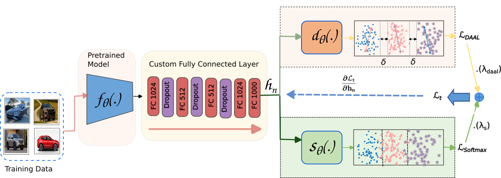
H Gebrerufael, A Tiwari, G Neupane, G Hailu, B Bora
IEEE/5th International Conference on Electrical, Computer and Energy Technologies (ICECET 2025), 03–06 July 2025, Paris, France.
Presentation
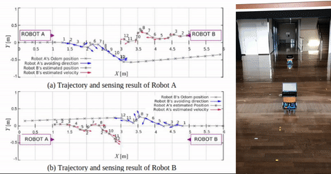
H Hailu, A Yorozu, A Ohya
The 38th Annual Conference of the Robotics Society of Japan (RSJ 2020), Vol. 38, October 9–11, 2020.
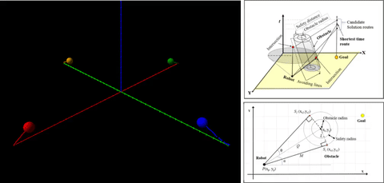
H Hailu, B Gebregziabher, P Raj
IEEE/The 8th International Conference on Intelligent Robotics and Control Engineering (IRCE 2025), Kunming, China, August 18–21, 2025.
Phenotyping and Precision Agriculture (2025)
Leveraging ROS for robot control and TensorFlow for DL image processing to automate phenotyping in crop breeding applications.
Legged Robot (Boston Dynamics SPOT) for Industrial Site Inspection (2023)
Developed control and navigation algorithms for the Boston Dynamics SPOT robot to enable autonomous industrial site inspections. ROS for control and navigation with PyTorch x FastRCNN for grate and puddle detection.
BenchBot (2024)
Another Competition (2023)
BenchBot (2024)
Affordable 6-DOF Manipulator Design (2025)
A lightweight, 3D-printed 6-DOF robotic arm designed to be affordable, easy to build, and suitable for research and educational use.
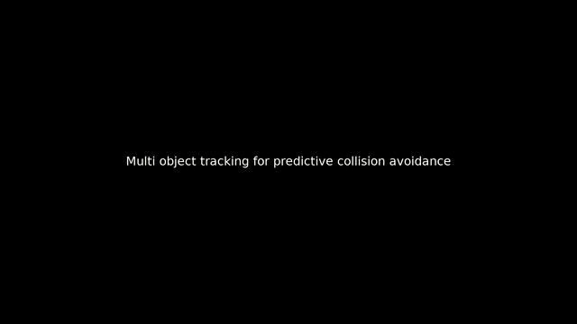
Bruk Gebregziabher, Hadush Hailu
https://doi.org/10.48550/arXiv.2307.02161, 2023
Presentation
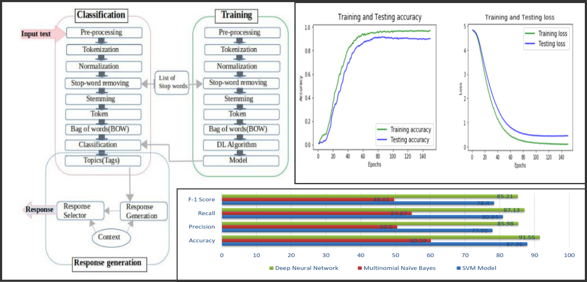
Goitom Ybrah, Hadush Hailu, Shishay Welay (PhD.)
https://doi.org/10.48550/arXiv.2402.01720, 2024
iCog Makers RoboSoccer Cup, Ethiopia (2017)
We participated in Ethiopia’s first national RoboSoccer competition as Team Phoenix (Mekelle University & Mekelle Institute of Technology) and won 2nd place with our low-cost autonomous RoboSapien platform.
Player Robot Competition, University of Tsukuba, Japan (2020)
We developed a robot that autonomously plays rock–paper–scissors using sensing and control algorithms. Although we did not win, the project offered valuable experience in real-time perception and human–robot interaction.
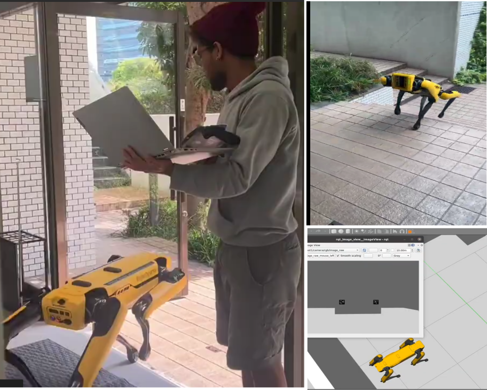
Four Legged Boston Dynamics SPOT robot
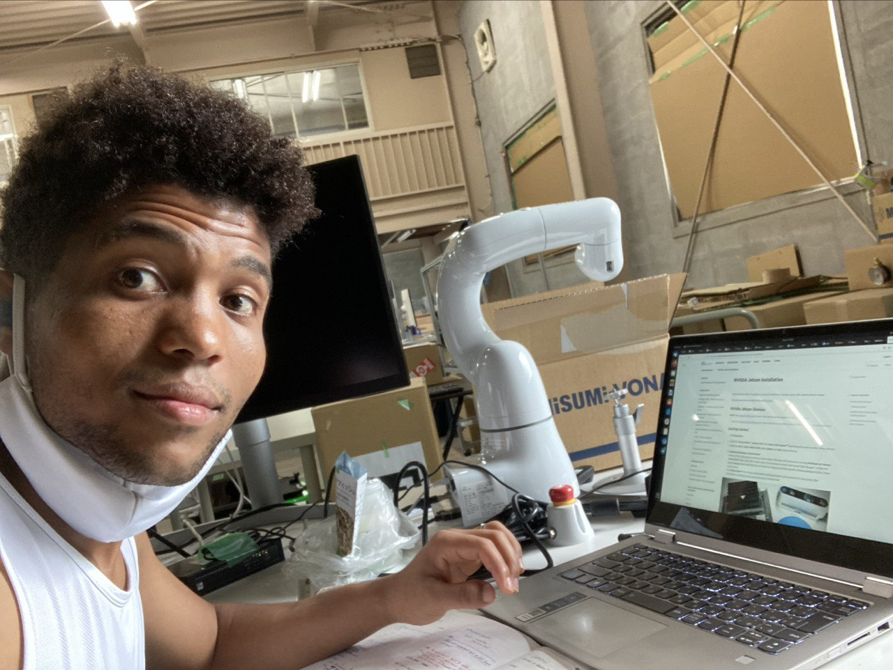
Cobot 6DOF Manipulator Robot
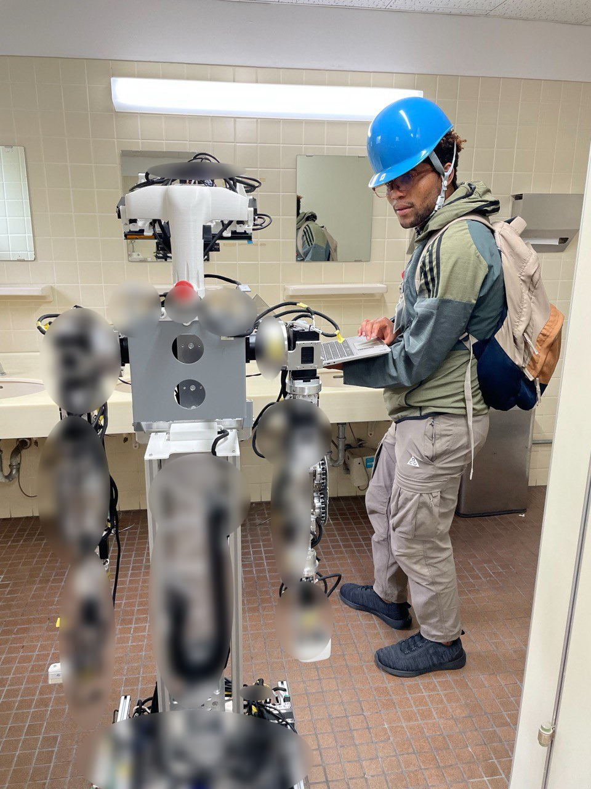
Nyokkey kawasaki humanoid robot
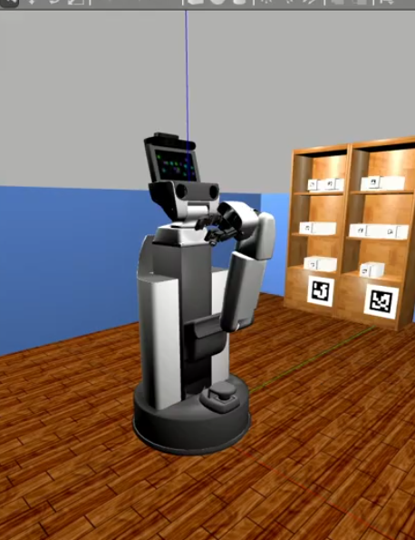
HSR mobile manipulator robot
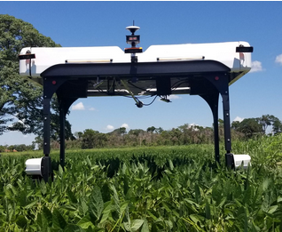
solinftec agronomy robot
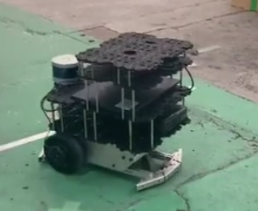
vstone mobile robot
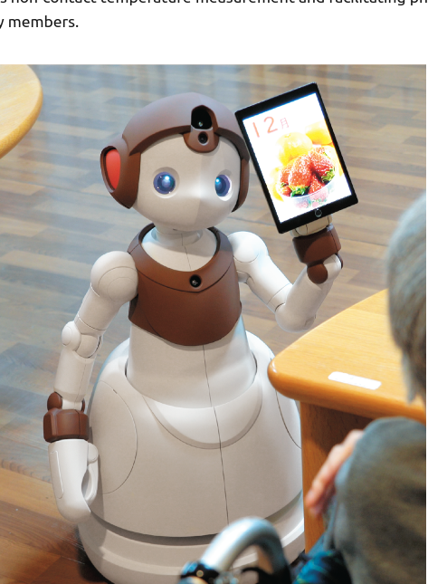
Sony HANAMOFLOR nursing care robot